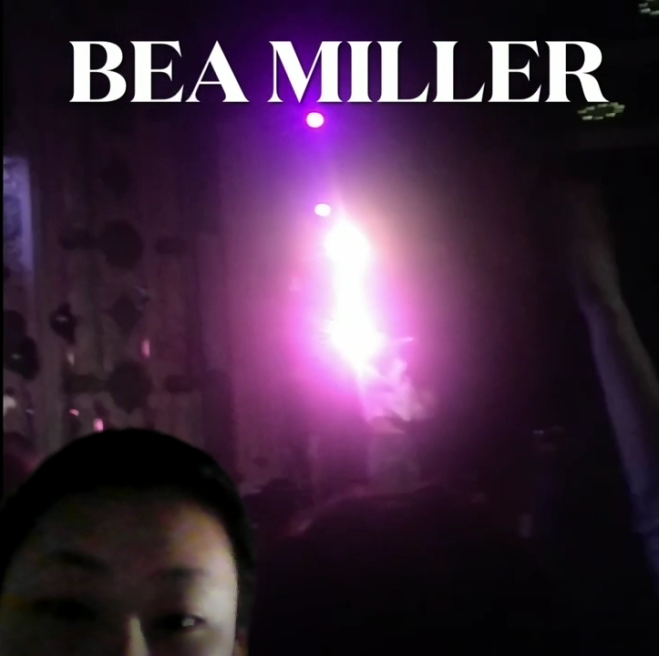

This is the Green Screen Project where I make a edit of a video and use that as my background on camera. I used zoom to record and make it into a green screen.This was a fun project to learn because it seems like a cool thing to know how to do. I made my video on Bea Miller and Khalid when I went to their concerts a few years ago.
